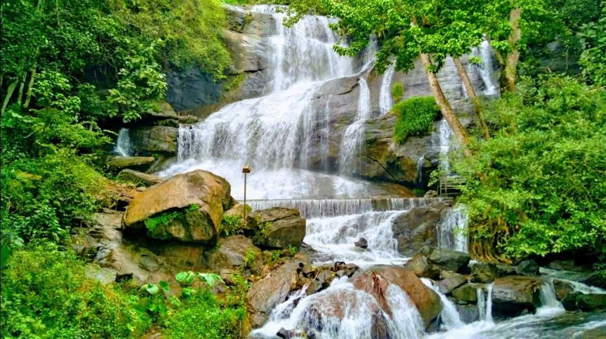
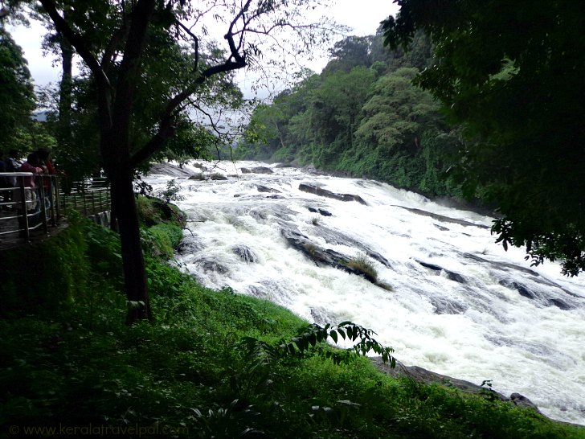
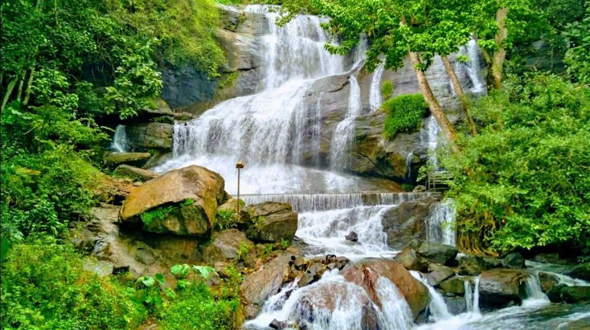
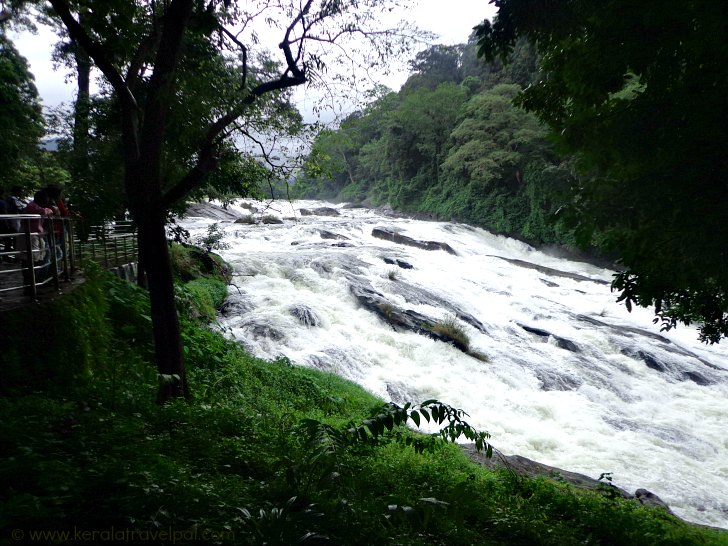
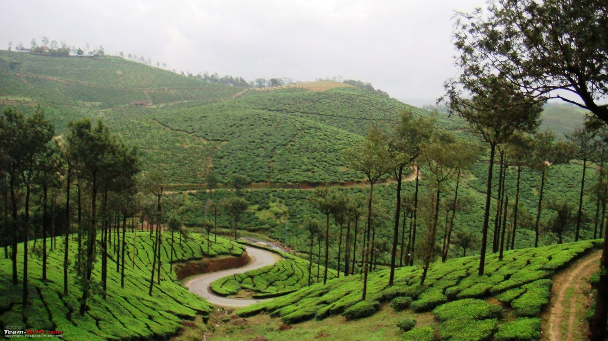
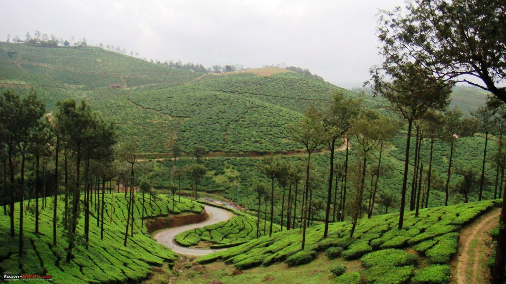

Backwaters in Kerala
Backwaters in Kerala
Wildlife Sacturies in Kerala
 



Waterfalls in Kerala
 

Hill Stations in Kerala
Kerala, often referred to as “God’s Own Country,” is a premier tourist destination in India, celebrated for its breathtaking natural beauty and rich cultural heritage. The state offers a diverse range of attractions, from the serene backwaters of Alappuzha and Kumarakom, where visitors can enjoy tranquil houseboat cruises, to the lush green hills of Munnar and Wayanad, known for their tea plantations and cool climate. Kerala’s coastline along the Arabian Sea features pristine beaches like Kovalam and Varkala, perfect for relaxation and water activities. The state’s vibrant culture is showcased through classical dance forms such as Kathakali and Mohiniyattam, and festivals like Onam and Thrissur Pooram. Additionally, Kerala is renowned for its Ayurvedic wellness treatments, attracting visitors seeking rejuvenation and health. Eco-tourism is also a significant aspect, with wildlife sanctuaries like Periyar offering opportunities for trekking and wildlife safaris. The unique blend of natural beauty, cultural richness, and warm hospitality makes Kerala a must-visit destination for travelers.